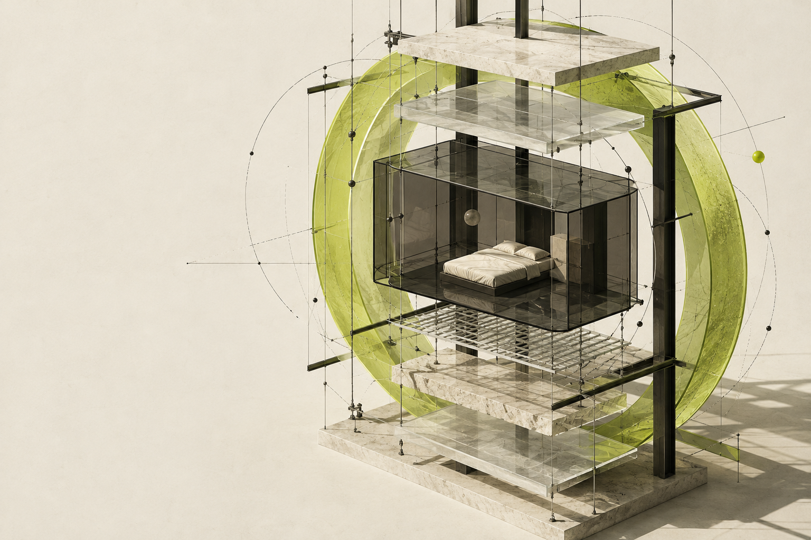
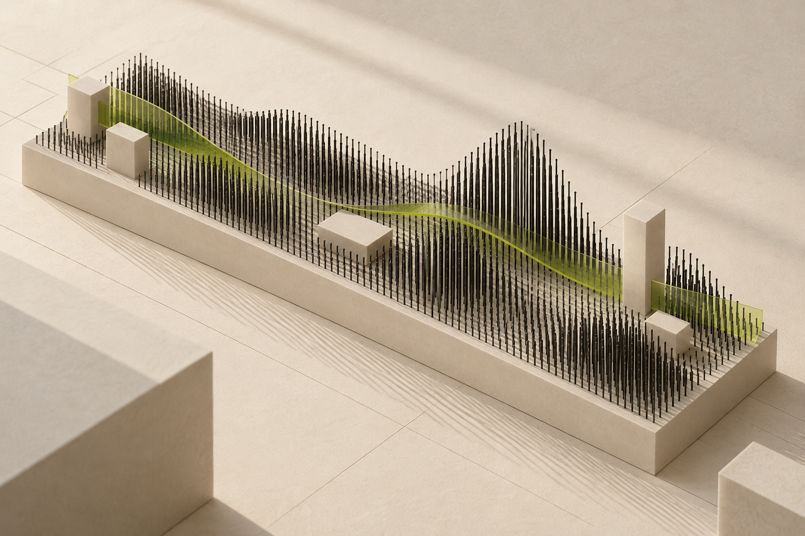

Read the night.
Bring sleep records into one transparent format. See changes across nights, not just a number this morning.

OPEN SLEEP INTELLIGENCE / 001
Your nights are data.
Your life is the context.
A new intelligence layer for smart sleep.
Built around the
person behind the pattern.
Late nights have different reasons.
Intelligence should know
the difference.
A deadline. A new routine. A mind that won’t switch off. A graph can show what changed. Somnia is an exploration of what happens when your sleep signals meet the context of your life.
Our ambition: give every compatible smart mattress an evolving, personal service layer.
Explore the architecture
STUDY / 02Bring sleep records into one transparent format. See changes across nights, not just a number this morning.
Ask before assuming. Give people a way to add the context that sensors cannot capture.
Make memory visible, correctable and removable. Let the next conversation begin with understanding.
A small, working expression of the idea.
Change the context.
Watch the response change.
A LITTLE CONTEXT CHANGES EVERYTHING.
| Date | Bedtime | Wake time | Sleep |
|---|
SOMNIA / OBSERVATION
These notes are visible context. This reference engine does not interpret free-text notes; the context buttons above drive its responses.
All interactions run in this browser. Nothing you enter is sent to a model or a server. Use sample data for this prototype. Enabling storage saves the workspace on this browser profile.
Import a 1–90 night JSON array or a Somnia workspace export. Download sample data. Removing device storage also removes the saved copy.
A design and engineering prototype for general wellbeing. Not a medical device, diagnosis or treatment. Sleep education: NHLBI ↗
A RELATIONSHIP, WITH STRUCTURE.
People change. A useful system needs to change with them. Somnia makes the memory layer explicit: what is remembered, where it came from, and what you can change.
Validated JSON today. Device integrations next.
User-confirmed context and editable records.
Evidence-grounded model reasoning and evaluation.
For manufacturers, Somnia proposes a new chapter after the hardware sale: a branded, ongoing sleep experience, built on compatible device signals and a relationship that develops over time.
Start with one compatible device and one clear use case. Explore an integration without designing another mattress.
A paid integration pilot, followed by a potential software licence or service subscription. Pricing and willingness to pay remain to be validated.
Make the reference implementation easy to run and examine. Earn the right to expand through useful experiences and measurable pilot results.
THE NEXT CONCRETE STEP
A proposed pilot, not a claim of deployment. We bring the software direction. A partner brings device access, a real setting and consenting participants.
Discuss a pilot ↗Agree on device access, consent, data boundaries and a single useful experience.
Test contextual explanations, memory correction and a simple weekly review.
Review engagement, explanation usefulness, corrections and willingness to pay. Decide what deserves to scale.
Run the prototype. Inspect the system.
Help shape what comes
next.